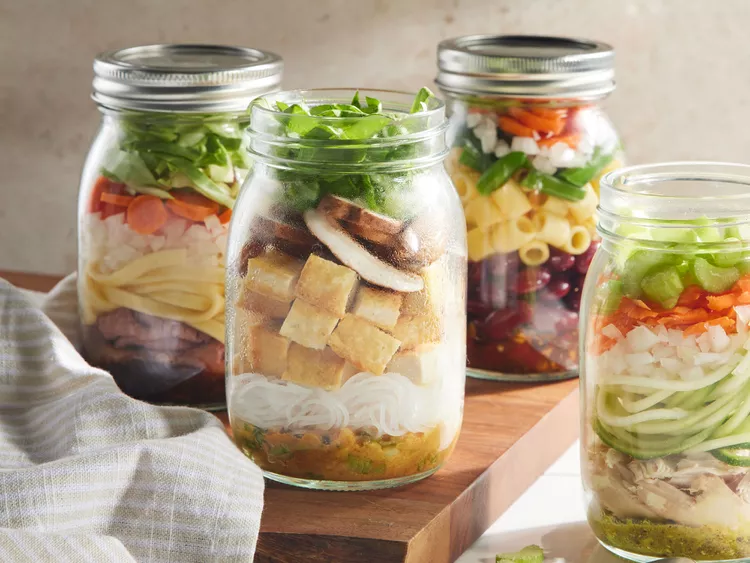

Miso Noodle Soup in a Jar

Description:
Our version of miso noodle soup in a jar was inspired by recipes on TikTok for miso soup in a jar.
Try this heat-and-eat recipe for a warming main to prep and tote all season long.
Use jars labeled “microwave-safe” (check the bottoms) and never microwave the lids.
Ingredients:
- Tofu: 12 ounces extra-firm tofu
- Vegetable Oil: 1 tablespoon vegetable oil
- Green Onions: 1/4 cup sliced green onions
- White Miso Paste: 3 tablespoons white miso paste
- Garlic: 2 cloves garlic, minced
- Vegetable Stock Base: 1 tablespoon vegetable stock base
- Ginger: 1 tablespoon grated fresh ginger
- Rice Vermicelli Noodles: 1 1/2 cups cooked rice vermicelli noodles
- Shiitake Mushrooms: 1 cup thinly sliced shiitake mushrooms
- Baby Bok Choy: 1 cup thinly sliced baby bok choy
Steps:
- Cut tofu into 1/2-inch planks. Heat oil in a large skillet over medium-high heat. Cook tofu, turning halfway through, until golden, 6 to 8 minutes. Cut tofu into cubes.
- Stir together green onions, miso paste, garlic, stock base, and ginger in a small bowl. Divide evenly among 3 microwave-safe pint-size canning jars with lids.
- Layer evenly with rice vermicelli noodles, tofu, mushrooms, and bok choy. Chill, covered, up to 5 days. To serve, see “Heat and Eat”. Garnish with sliced green onions.